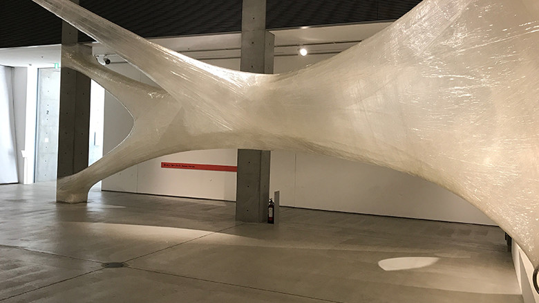

idea

numen for use
http://www.numen.eu/home/news/-どんな人
多様なバックグラウンドを持つ人々によって構成されたクリエイター集団です。
-解説
ビニールテープを固定して蜘蛛の巣のようなオブジェをつくっています。下には穴が空いていて中に入ることができます。
-好きなところ
ビニールテープという身近な素材で巨大なスケールの作品を作っていて意外性がありました。特に、中に入ることができるのは衝撃でした。 根元の部分を切ったらド派手な壊れ方しそう。